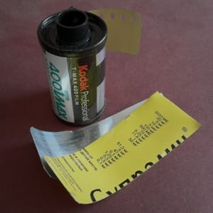

В некоторых городах можно арендовать темную комнату со всем оборудованием, чтобы попечатать в ней фотки. Вот думаю, может попробовать рентануть на ночь такую штуку в СФ, когда там буду? Жаль у нас такого нет, похоже(
В некоторых городах можно арендовать темную комнату со всем оборудованием, чтобы попечатать в ней фотки. Вот думаю, может попробовать рентануть на ночь такую штуку в СФ, когда там буду? Жаль у нас такого нет, похоже(

Оч приятное кино :)

Замутил из баночки с витаминками фильм-ретривер (замотавшийся кончик пленки вытаскивать), работает как часы прототип.
Таймлапс про облака.
Нашел апп, который знает как что бодяжить, и сколько какую пленку проявлять!
О, это же Маркет-стрит!
Time you enjoy wasting is not wasted time. — Bertrand Russel
А мне вспомнился Пахом :)

А какую крутую штуку в Севилье построили!
А 98 штука (из "101 Things I Learned in Architecture School") про кризис:
The Chinese symbol for crisis is comprised of two characters: one indicating "danger", the other, "opportunity".
Update: fake!